Визуелизација података¶
У овој лекцији ћемо дискутовати о:
раду са командним тракама у Екселу,
приказивању података разним врстама графикона, и
приказивању две групе података на истом графикону.
Рад са командним тракама (ribbons)¶
Увек је важно податке приказати у виду графикона зато што људи најлакше и најбрже обрађују визуелне податке. (Вероватно знаш за изреку да једна слика вреди више од хиљаду речи.) Научићемо да приказујемо податке разним врстама графикона. Важно је напоменути да није свака врста графикона погодна за приказивање сваке врсте података.
Ексел, наравно, има могућност да на основу података који су дати направи графикон. Одговарајуће опције се налазе на командној траци (енгл. ribbon) који се зове „Insert”. При врху прозора се налази списак свих командних трака:
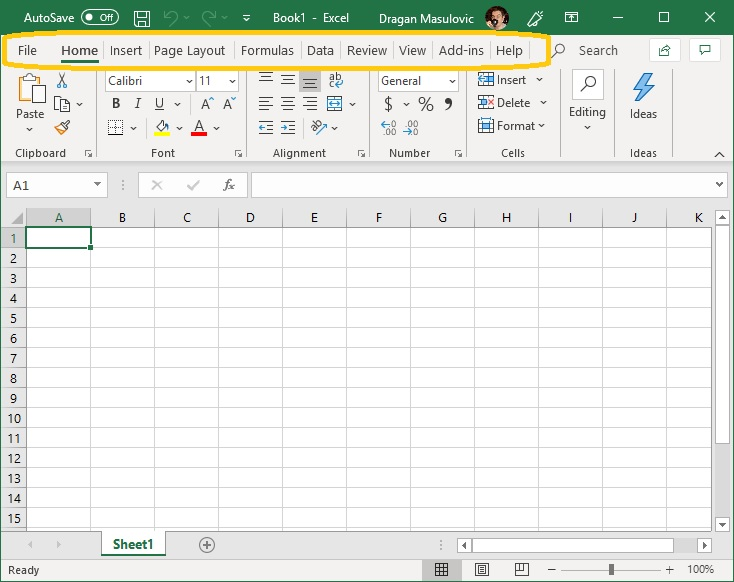{kind=link}
Одабиром било које од њих можемо да добијамо нови сет команди као што ћемо показати у наредном одељку. Кликом на „Home” увек можемо да се вратимо на основну командну траку („да се вратимо кући”).
Промена величине у времену¶
Корак 1. Са следећег линка преузми документ BrLjudiNaSvetu.xlsx и сними га на свој рачунар:
Отвори документ и пређи на командну траку „Insert” на којој су нам доступне нове могућности. За креирање графикона ће нам бити важне оне које се налазе у групи „Charts” (енгл. „графикон”):
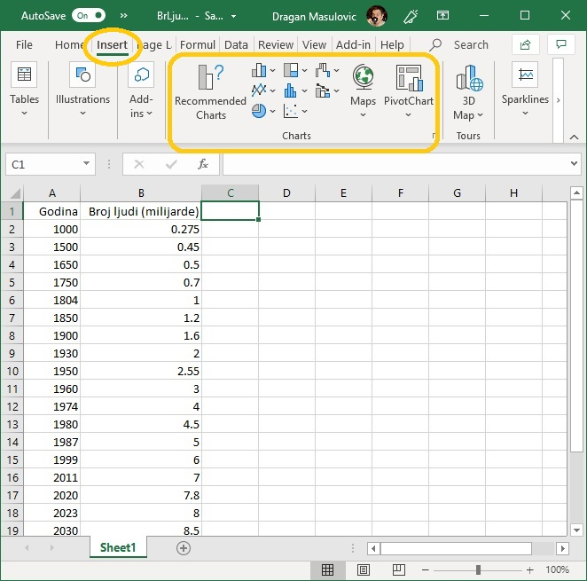{kind=link}
Корак 2. У табели коју смо учитали приказан је процењени број становника наше планете у разним историјским периодима, при чему је број људи исказан у милијардама. Дакле, ради се о подацима који показују како се неки параметар (број становника наше планете) мењао у времену. Да бисмо ове податке приказали графиконом селектоваћемо целу табелу укључујући и имена колона:
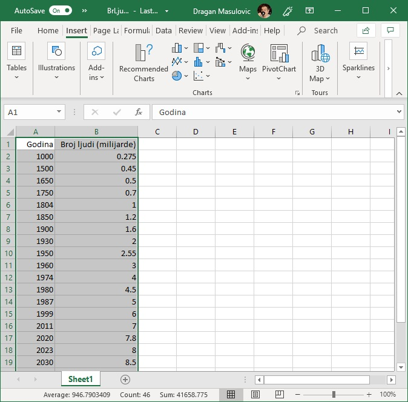{kind=link}
На основу имена колона табеле Ексел у највећем броју случајева може да закључи како треба да се зове табела.
Корак 3. На командној траци „Insert” из групе „Charts” одабраћемо опцију „Scatter (X,Y)”:
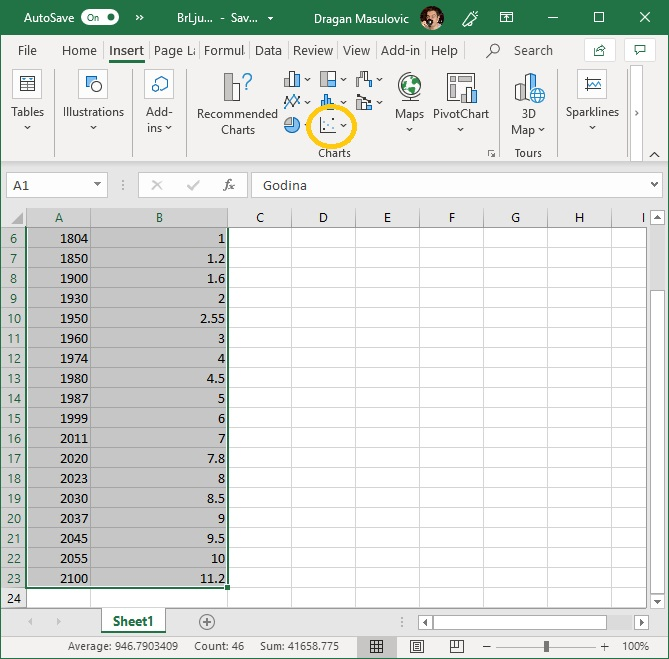{kind=link}
како бисмо добили списак расположивих стилова ове врсте графикона:

Одаберимо назначени стил (тачке спојене линијама):

Добијамо графикон који је део документа:

Корак 4. Пошто је графикон превелики и прекрива податке, можемо га мало смањити („ухватимо” мишем за истакнуту тачку у углу графикона и подесимо величину), а можемо га и преместити (клинемо у празан део оквира и не отпуштајући тастер на мишу преместимо графикон). Примети да је Ексел исправно схватио како графикон треба да се зове:
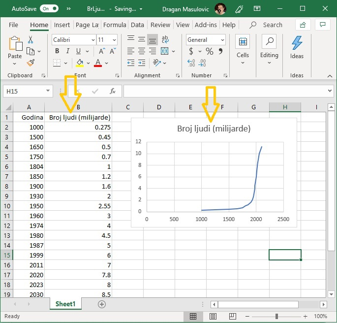{kind=link}
Корак 5. За крај ћемо снимити документ као Ексел документ и као ПДФ. Ако погледамо ПДФ документ, видећемо да је графикон заиста саставни део документа:

Компаративна анализа¶
Често подаци служе томе да се изврши компаративна анализа, дакле, да се неке врсте упореде (компарација = упоређивање) и да се установи која врста је више, а која мање заступљена у подацима.
Корак 1. Са следећег линка преузми документ Zarada2.xlsx и сними га на свој рачунар:
Табела садржи податке о продаји воћа и оствареној заради:
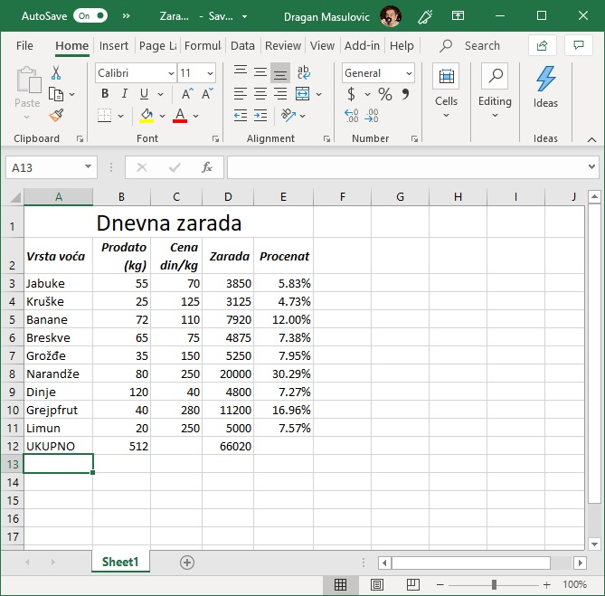{kind=link}
Корак 2. Желимо да илуструјемо зараду и да визуелизујемо допринос сваке врсте продатог воћа заради. Пређи на командну траку „Insert” и уочи (немој још ништа да кликнеш!) опцију која црта хистограме (зову се још и стубичасти дијаграми, а на енглеском column charts или bar charts):

Корак 3. У овом примеру треба да прикажемо само део података из табеле, и при томе колоне које садрже те податке нису једна до друге. Зато ћемо морати да селектујемо две групе података овако:
селектуј ћелије A2:A11 као и раније, па
притисни тастер [CTRL] и држећи га притиснутог селектуј ћелије D2:D11
Треба да добијеш:
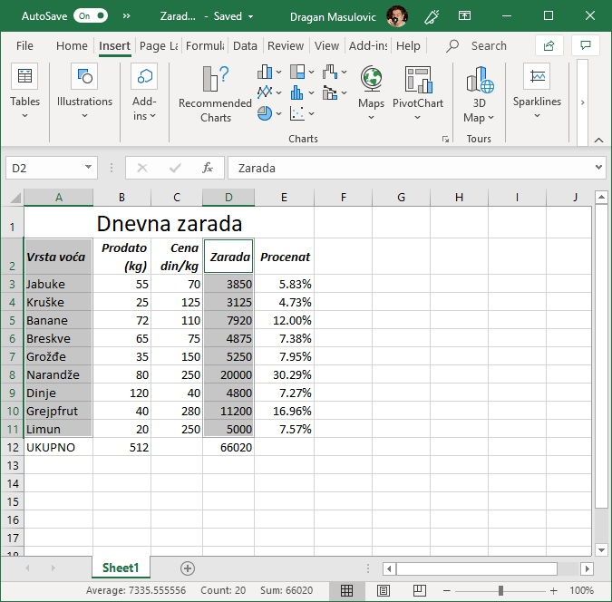{kind=link}
Обрати пажњу на то да смо у обе групе података селектовали и име колоне!
Корак 4. Сада кликни на опцију која црта стубичасте дијаграме и одабери стил који ти се највише свиђа:
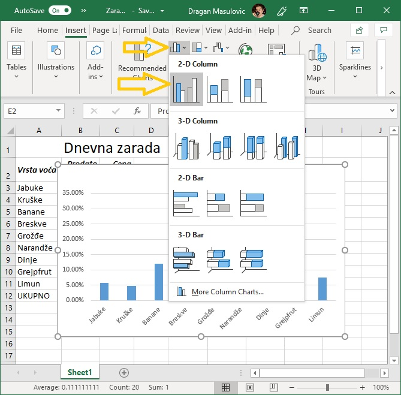{kind=link}
Добили смо графикон:
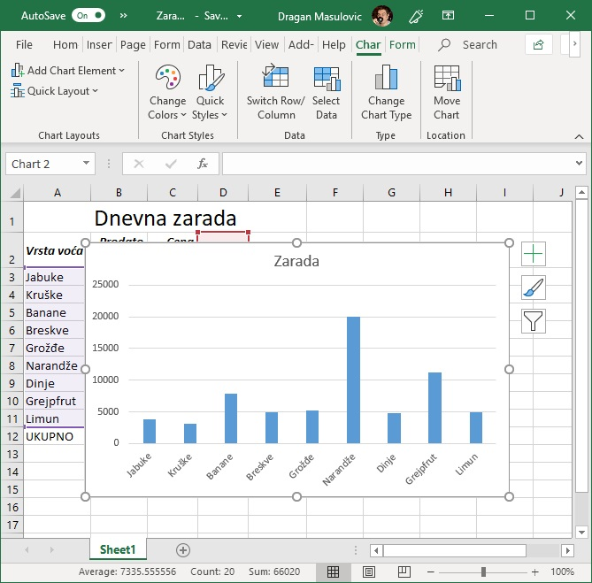{kind=link}
Корак 5. Ако графикон прекрива текст можемо га мало смањити и померити:
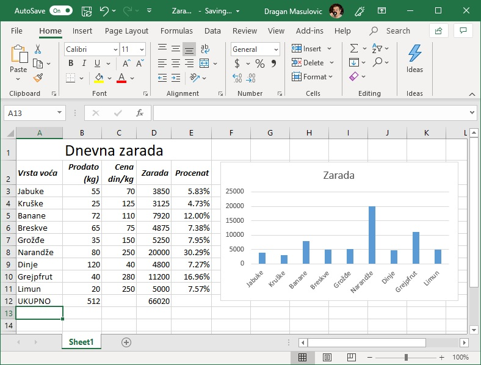{kind=link}
Визуелизација удела у целини¶
Ако желимо да визуелизујемо у којој мери појединачни делови учествују у целини користимо секторски дијаграм (или питасти дијаграм од енгл. pie chart).
Корак 1. Преузми поново документ Zarada2.xlsx и сними га на свој рачунар (ако треба, „прегази” стару верзију документа):
Корак 2. Пређи на командну траку „Insert” и уочи (немој још ништа да кликнеш!) опцију која црта секторске дијаграме:
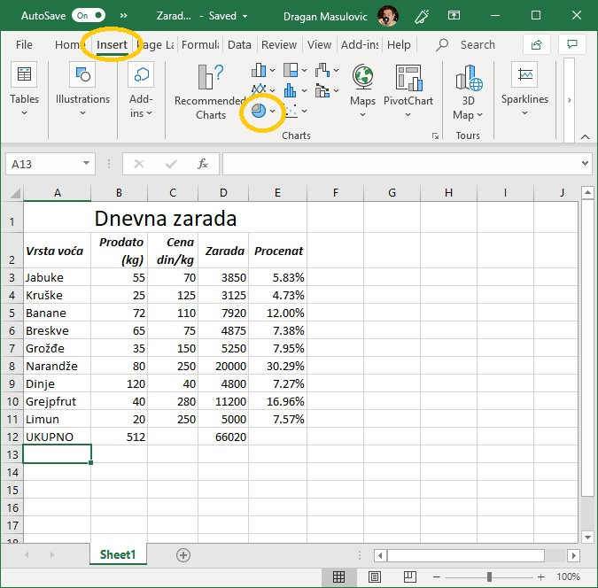{kind=link}
Корак 3. Поново селектуј две групе података:
селектуј ћелије A2:A11 као и раније, па
притисни тастер [CTRL] и држећи га притиснутог селектуј ћелије D2:D11
Корак 4. Сада кликни на опцију која црта секторске дијаграме и одабери стил који ти се највише свиђа:
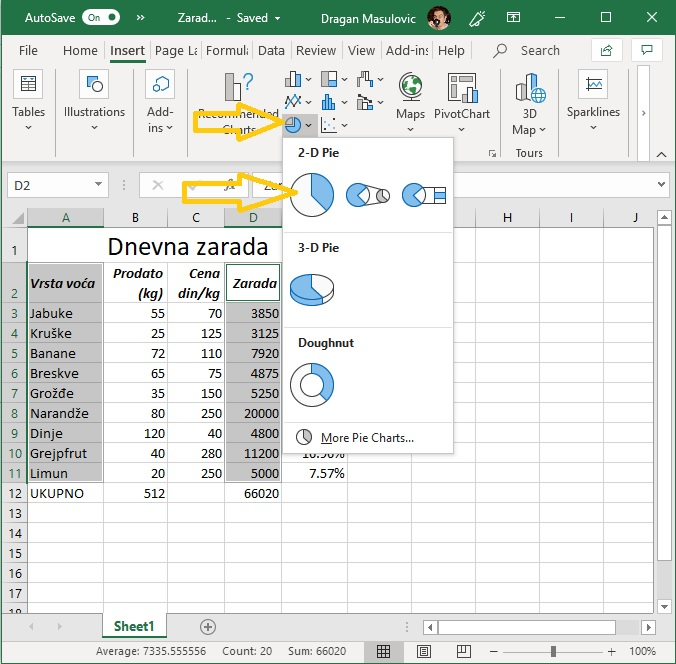{kind=link}
Добили смо дијаграм:

кога опет можемо мало уредити ако прекрива текст:
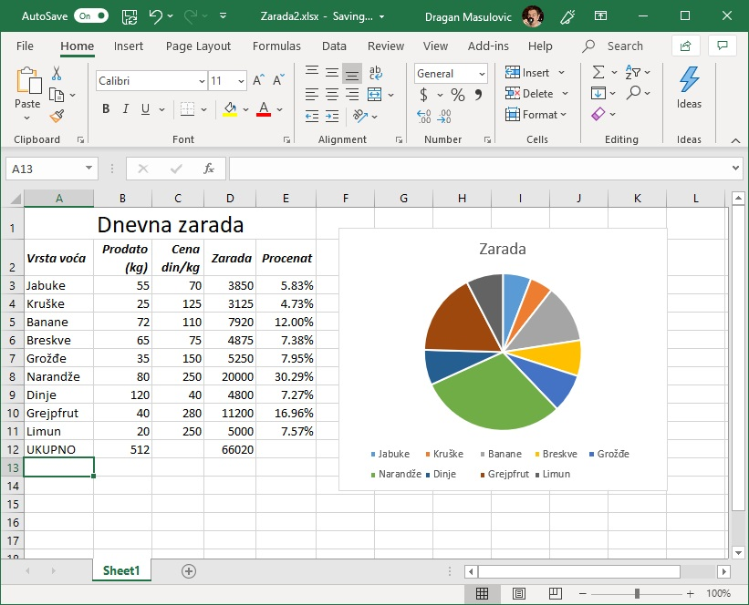{kind=link}
Ако кликнемо на дијаграм, Ексел ће нам приказати који подаци су приказани на дијаграму:

Приказивање две групе података на истом дијаграму¶
Могуће је на истом графикону приказати две групе података. Ево примера.
Корак 1. „Нормална телесна температура” је заправо интервал температура који се мења са узрастом особе. Када се температура мери испод пазуха, нормална телесна температура (у степенима Целзијуса) је описана табелом NormalnaTT.xlsx коју можеш да преузмеш са следећег линка:
Табела изгледа овако:
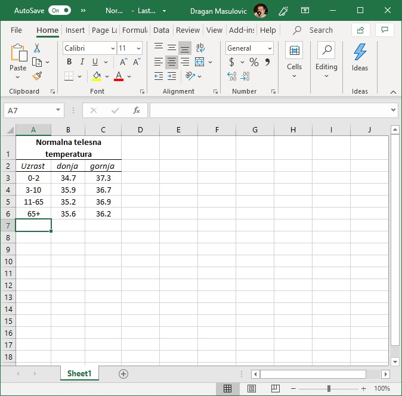{kind=link}
Корак 2.
Селектуј ћелије A2:C6,
одабери радну траку „Insert”
Из групе „Charts” одабери опцију „Line Chart” (линијски дијаграми)
па од понуђених стилова одабери стил као на слици:
{kind=link}
Добили смо графикон као на слици:
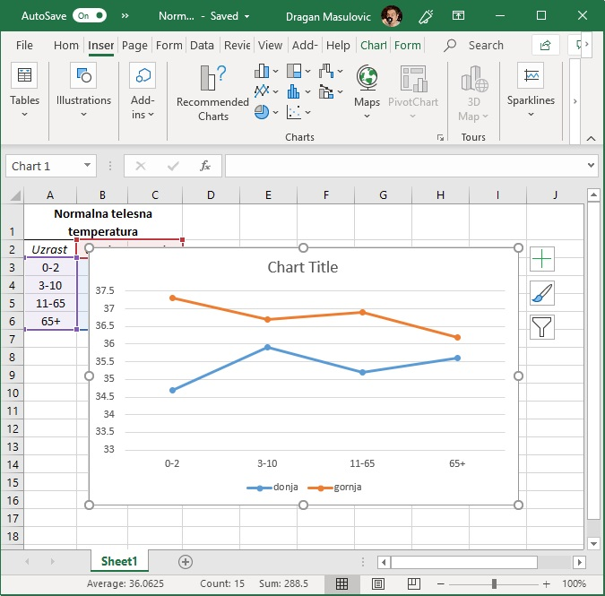{kind=link}
Корак 3. Примети да је Ексел приказао две групе података на истом графикону, додао је графикону и легенду, али није успео да схвати како цео графикон треба да се зове па је зато ставио „Chart Title” као подсетник да морамо ми ручно да унесемо име графикона.
Ако кликнемо на „Chart Title” једном да га селектујемо, па онда још једном (дакле, не двоклик тик-тик, већ два клика клик-пауза-клик) појавиће се курсор:

Сада можемо да унесемо име графикона:

и да прераспоредимо елементе табеле, ако је то потребно:
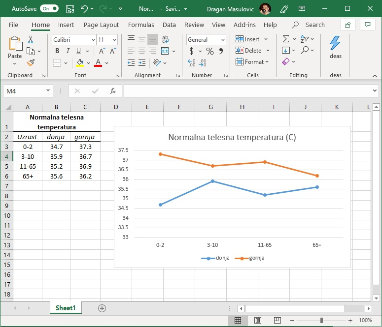{kind=link}
Задаци¶
Задатак 1. Са следећег линка преузми датотеку која садржи податке о маси (у килограмима) и дужини/висини (у центиметрима) једног дечака од његовог шестог месеца па до његових 6,5 година.
Прикажи једним графиконом како се мењала његова маса, а другим како се мењала његова висина.
Задатак 2. Процењује се да је Кина на дан 1.7.2019. имала 1.420.062.022 становника. Број становника у Кини се сваке године повећа за 0,35%. Под претпоставком да се годишњи раст броја становника у Кини неће мењати, приказати графиконом очекивани број становника Кине у наредних десет година.
Задатак 3. Са следећег линка преузми датотеку која садржи податке о броју становника Србије у 2017. години по годинама старости:
Додај табели нову колону „M/Ž” па у свакој врсти табеле (дакле, за сваки узраст за који у табели постоје подаци) одреди количник припадника мушког и женског пола тог узраста.
Прикажи податке стубичастим дијаграмом. Шта уочаваш?